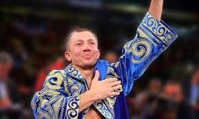
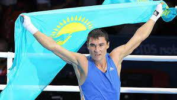

Сарыарқаның ішіне кіретін Қарағанды облысы. Ол атақты тұлғаларының туған жері.
Боксшы Геннадий Головкин
Генадий Головкин 2008 жылы әлем чемпионы және 2004 жылғы Олимпиаданың финалисті атанды. Қарағандыда туып-өскен спортшы қазіргі таңда кәсіби рингте көп уақыт өткізеді. Ол 34 шайқасқа қатысып, ешқайсысында жеңілгіс көрген жоқ. Генадий Головкин, немесе оның қазіргі кездегі сәнді атауы бойынша GGG- WBA Super World Champion, IBF World Champion, IBO World Champion мен орта салмақтағы WBC World Champion interim титулдарының иегері. Боксшы шетелде көп уақыт өткізгеніне қарамастан, өзінің азаматтығын өзгертпеді. Генадий Головкин қазақ спортшыларының жаңа буынына сабақ беру үшін Қарағанға қайта-қайта келіп тұрады.


Боксшы Серик Сапиев
Серік Сапиев Қарағанды облысында дүниеге келді. Спортшы өзінің Лондондағы жеңісінен кейін көптеген сыйлықтарға ие болды, олардың қатарында астанамызда орналасқан Президент атынан табысталған пәтер мен арағанды облысының әкімі ұсынған жаңа көлік. Боксшы «Отан» орденімен марапатталып, Қарағанды облысының құрметті азаматы атағына ие болды және оның құрметіне бокс орталығы ашылды. Серік Сапиев үлкен спорттан кетіп, қазір «Астана Арланс» кәсіпқой бокс клубының директоры қызметін атқаруда. Спортшы көп уақытын халық үшін еңбек жасауға бөледі.
Қазақстанның тұңғыш ғарышкері Тоқтар Әубәкіров
Тоқтар Әубәкіров – Білімі бойынша ол сынақшы-ұшқыш. 1988 жылы Тоқтар Оңғарбайұлы Кеңес Одағының Батыры атағына ие болып, Ленин орденімен және «Алтын Жұлдыз» медалімен марапатталды. 1991 жылы Ғарышкерлер даярлау орталығында оқуды бастап, бірнеше айдан кейін ресейлік және австриялық ғарышкерлермен бірге ғарышқа ұшты. Тоқтар Әубәкіров «Мир» орбиталық кешенінің бортында 13 минут өткізді. 1991 жылдың 10 қазанында қазақстандық ғарышкер «Союз ТМ-12» ғарыш кемесімен жерге оралды.